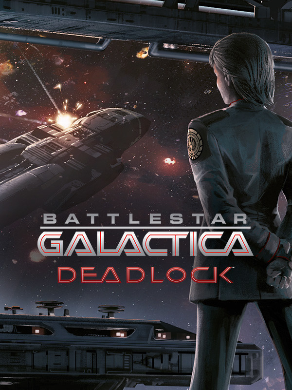

Battlestar Galactica Deadlock
Battlestar Galactica Deadlock
Details
|  | |
| Playtime | Not Played |
| Last Activity | Never |
| Added | 16/07/2025 22:43:24 |
| Modified | 16/07/2025 22:43:42 |
| Completion Status | Not Played |
| Library | Steam |
| Source | Steam |
| Platform | PC (Windows) |
| Release Date | 31/08/2017 |
| Community Score | 65 |
| Critic Score | 78 |
| User Score | |
| Genre | Simulator Strategy Turn-based strategy (TBS) |
| Developer | Black Lab Games |
| Publisher | Slitherine Ltd. Slitherine Software UK Ltd. |
| Feature | Co-Operative Multiplayer Single Player |
| Links | Official Steam GOG Twitch Wikipedia Wikia YouTube Uknown Uknown |
| Tag | |
Description
The Cylons have rebelled!
Four years of war and a steep price in human lives have not been enough to unlock a deadly stalemate. The Colonials have countered all of the Cylon’s offensives so far, but no decisive victory was achieved.
The deadlock is suddenly broken by a surprise attack from the Cylons and the brutal annihilation of the Colonial Fleet High Command on Picon. The fate of mankind is now resting on the shoulders of Rear-Admiral Lucinda Cain.
The secret, cunning plan she has conceived could turn the tide of the war forever…
THE GAME

BATTLESTAR GALACTICA Deadlock™ takes you into the heart of the First Cylon War, to fight epic 3D battles that will test your tactical prowess.
Take control of the Colonial Fleet from the bridge of the mobile shipyard, Daidalos, and free the Twelve Colonies from the Cylon threat. Build your fleets, protect the Quorum alliance and prepare to dig deeper into the conspiracies of this heroic conflict.
Command the Colonial Fleet
Design and build fleets of powerful capital ships. Recruit officers to protect the Twelve Colonies. From the Manticore corvette to the mighty Jupiter class Battlestar, you won’t be short on firepower.
Legendary Names
Continue the legacy of Battlestar Galactica™ with new characters and familiar faces, in an original story set during the First Cylon War. Launch Viper squadrons and Raptor scouts and jump the Galactica in to dominate the battlefield. An authentic Battlestar Galactica™ experience awaits.
WEGO 3D Tactical Battles
Intense tactical space battles in full 3D. Give commands to your fleet of capital ships and watch the explosive results play out in pause-able real-time across beautiful environments.
War Room Politics
From the bridge of the Daidalos shipyard you will command all the Colonial Fleet. Build up your forces and jump them across the quaternary solar system of Cyrannus. Keep the Colonies safe and the Quorum of Twelve unified, lest the alliance break and introduce a new age of Cylon dominance.
The Cylon Threat
Prepare to face relentless opposition. Defend against squadrons of Cylon Raiders and missile salvos from Basestars. Trust in your marines to fight off Centurion boarding parties, while your firewalls slow down the hacking attacks of the Wardriver electronic fighters. Unlock blueprints for new ships, munitions and squadrons to help defeat your tireless foe.
Join Forces
Experience Battlestar multiplayer like never before! Outwit your opponent in fierce 1-v-1 fleet battles.
Review Your Battles
Review your battles from a cinematic point of view with the AutoCam replay, and then export them to YouTube with our in-game tool!

NEW UPDATES - Season One Finale announcement!
Since its release Battlestar Galactica Deadlock has been constantly improved and expanded through DLCs and free updates alike. The developers have added plenty new features and content to the original game. The release of Sin and Sacrifice marked the conclusion of Season One, and we decided to show and recap all that had been added until that point. Click on the link below to have a look!